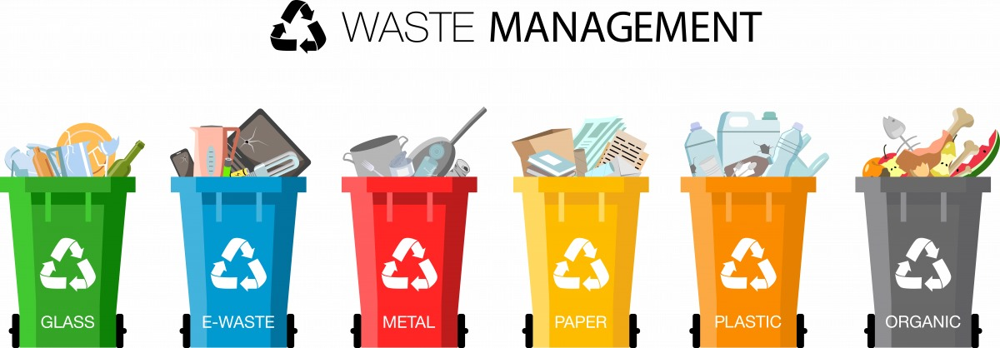

What is E-waste?

E-waste refers to discarded electronic devices, including computers, smartphones, tablets, televisions, and other electronic appliances. Due to rapid technological advancements, the volume of e-waste is increasing significantly, posing environmental and health risks.
Importance of E-waste Management
Proper e-waste management is essential to minimize environmental pollution and conserve natural resources. Recycling e-waste helps recover valuable materials like metals, plastics, and glass, reducing the need for raw materials extraction and energy consumption.
Ways to manage E-waste

- Reuse: Extend the lifespan of electronic devices by repairing or refurbishing them for reuse.
- Recycle: Recycle e-waste through authorized recycling facilities to recover valuable materials and prevent environmental pollution.
- Proper Disposal: Dispose of e-waste responsibly by following local regulations and guidelines to prevent improper disposal and environmental contamination.
Get Involved
You can contribute to e-waste management by:
- Participating in e-waste recycling programs.
- Donating or selling old electronics for reuse.
- Spreading awareness about the importance of e-waste management in your community.
Join us today!!
Create an account today and make sure to know your nearest E-WASTE facility and get rid of your E-waste today!!